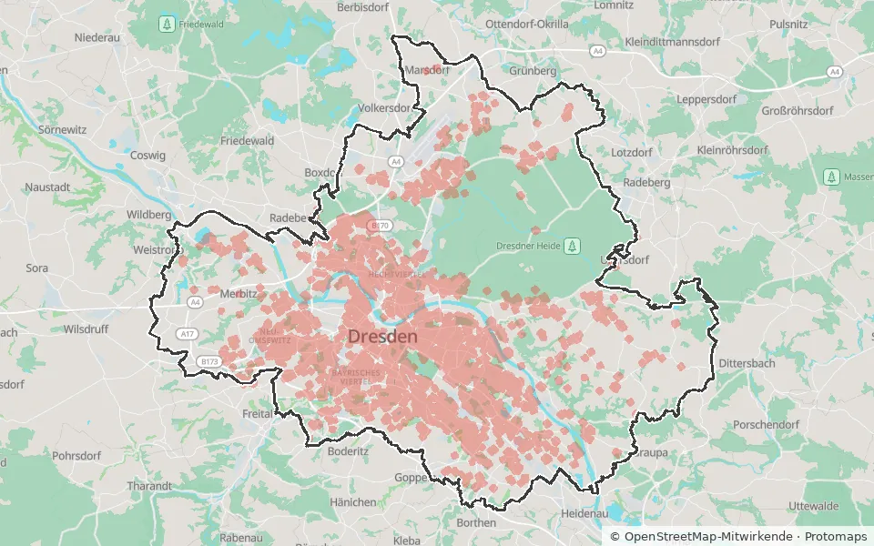
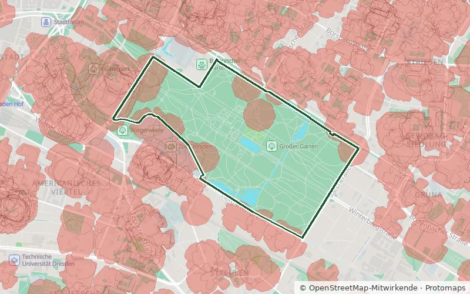
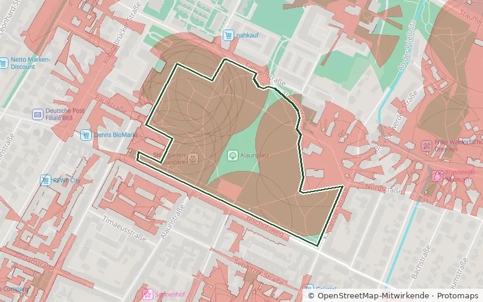
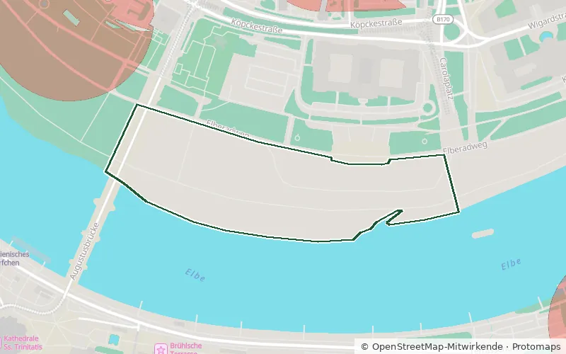
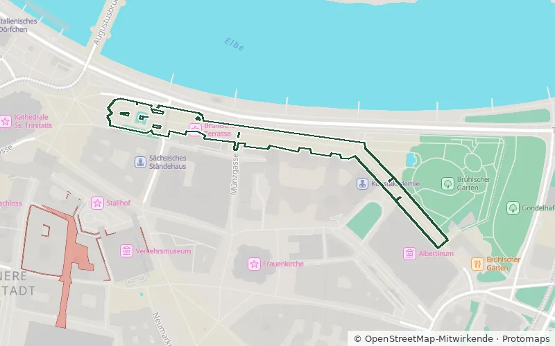
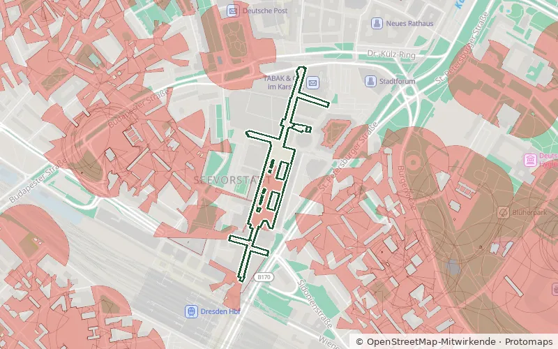
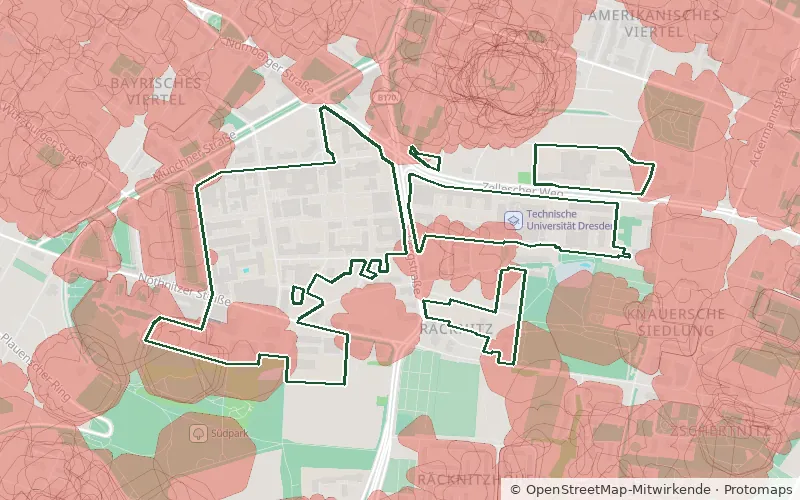

In Dresden ist öffentliches Kiffen auf 46 km² verboten, das sind 14,0 % der Stadtfläche von 329 km². Grund sind 3 045 Einrichtungen, in deren Sichtweite nach § 5 KCanG nicht konsumiert werden darf, vor allem Sportstätten und Spielplätze. Sichtweite heißt: höchstens 100 Meter vom Eingangsbereich, und nur dort, wo kein Gebäude die Sicht verdeckt. Dazu kommen die Fußgängerzonen, in denen zwischen 7 und 20 Uhr nicht konsumiert werden darf, und überall die unmittelbare Gegenwart von Kindern und Jugendlichen.
26 % der Stadtfläche sind Wald, vor allem die Dresdner Heide, und dort liegen nur 4,2 % in einer Zone. Ohne den Wald gerechnet sind es 17,4 %.

Woher die Zonen kommen
| Einrichtung | Anzahl | Zonenfläche |
|---|---|---|
| Schulen | 231 | 12,0 km² |
| Kitas und Kindergärten | 307 | 9,4 km² |
| Kindertagespflege | 19 | 0,5 km² |
| Spielplätze | 1 181 | 18,2 km² |
| Kinder- und Jugendeinrichtungen | 91 | 1,9 km² |
| Sportstätten | 1 216 | 21,2 km² |
Die Spalte rechts zählt jede Art für sich; weil sich Zonen verschiedener Einrichtungen überlappen, ist ihre Summe größer als die 46 km² oben. Fast gleich viel machen die 1 216 Sportstätten und die 1 181 Spielplätze aus.
Auf Spiel- und Bolzplätzen und auf Skater- und BMX-Anlagen verbietet die Grünanlagensatzung der Stadt außerdem, Alkohol „oder sonstige berauschende Mittel“ mitzubringen und zu konsumieren; das kostet bis zu 1.000 Euro, und Spielplätze sind nur von 8 bis 22 Uhr offen (Grünanlagensatzung). Anbauvereinigungen fehlen in der Tabelle: Sechs mit Sitz in Dresden hatten bis 2025 eine Erlaubnis, wo sie anbauen, ist nicht veröffentlicht (Landesdirektion Sachsen).
Großer Garten und Alaunpark
Im Großen Garten liegen 16 % der Fläche in einer Zone, um fünf Spielplätze und zwei Sportanlagen im Park und viele weitere am Rand; der größte Teil bleibt frei.

Ganz anders der Alaunpark in der Neustadt: 89 % liegen in einer Zone. Auf der Wiese liegen vier Spielplätze und sieben Sportanlagen, vom Bolzplatz bis zum Multisportfeld. Die Bürgerwiese kommt auf 74 %, der Südpark auf 49 %.

Elbe
Auf einem 100 Meter breiten Streifen Land entlang der Elbe liegen 16 % in einer Zone. Die Elbwiesen am Königsufer gegenüber der Altstadt liegen außerhalb jeder Zone (0 %), ebenso die Brühlsche Terrasse (0 %).


Altstadt und Neustadt
Eine amtliche Liste der Dresdner Fußgängerzonen haben wir nicht gefunden. Die Hauptstraße in der Neustadt wollte die Stadt bis Ende Oktober 2025 als Fußgängerzone mit Radverkehr ausweisen; vorher war sie Gehweg (Stadt Dresden). Die Seestraße war 2024 und 2025 versuchsweise Fußgängerzone, 2026 wegen einer Baustelle nicht (Stadt Dresden, März 2026). Die Karte zeigt blau, was in OpenStreetMap als Fußgängerbereich eingetragen ist, darunter Prager Straße, Altmarkt und Neumarkt; dort gilt zwischen 7 und 20 Uhr Konsumverbot.
Von der Prager Straße liegen außerdem 47 % in einer Sichtweiten-Zone, von der Hauptstraße 54 %, vom Wiener Platz am Hauptbahnhof 33 %. Altmarkt (0 %) und Neumarkt (0 %) liegen außerhalb der Zonen.

Hochschulen
Hochschulen sind nach § 5 KCanG keine Verbotsorte. Auf dem Campus der TU Dresden liegen 10 % in einer Zone, vor allem um Spielplätze, Kitas und Sportanlagen am Rand. Die Hausordnungen von TU und HTW verbieten das Rauchen in Gebäuden; die Hochschule für Bildende Künste verbietet Betäubungsmittel einschließlich Cannabis auf allen ihren Liegenschaften (Hausordnung HfBK).

Was sonst noch gilt
Ein Verstoß gegen § 5 Abs. 2 kostet in Sachsen 100 bis 500 Euro, in Gegenwart von Minderjährigen 300 bis 1.000 Euro (Bußgeldkatalog Sachsen). Zuständig ist die Stadt. Ein Rauchverbot im Freien kennt das Sächsische Nichtraucherschutzgesetz nur auf dem umfriedeten Gelände von Schulen und Jugendeinrichtungen. Von April bis September 2024 zählte die Polizei in Dresden 98 Verstöße gegen das Cannabisgesetz, darunter drei Menschen, die in einer Verbotszone kifften, alle in Fußgängerzonen (t-online, November 2024). Der Striezelmarkt hat keine eigene Regel zu Cannabis. Eigene Verbotszonen für Cannabis hat Dresden nicht (Stand 27. November 2026).
Häufige Fragen
Wo darf man in Dresden kiffen?
Außerhalb der roten Flächen, außerhalb der Fußgängerzonen zwischen 7 und 20 Uhr, nicht auf Spiel- und Bolzplätzen, nicht in Gegenwart von Kindern und Jugendlichen und nicht dort, wo ein Hausrecht es verbietet. Eine weiße Fläche auf der Karte heißt nicht, dass Konsum dort erlaubt ist: Die Karte kennt weder Hecken noch Bäume, die die Sicht nehmen, noch Einrichtungen, die in OpenStreetMap fehlen.
Darf man auf den Elbwiesen kiffen?
Am Königsufer liegt keine Sichtweiten-Zone. Es bleibt das Verbot in Gegenwart von Kindern und Jugendlichen, und an anderen Stellen des Ufers liegen Spielplätze und Sportanlagen in der Nähe.
Wie genau ist das?
Die Zonen sind aus OpenStreetMap berechnet, mit Gebäuden als Sichthindernis, und werden täglich neu gerechnet; die Zahlen auf dieser Seite sind vom 27. November 2026. Die Karte ist eine Orientierungshilfe, keine Rechtsauskunft. Wie gerechnet wird und wo die Grenzen liegen, steht auf der Über-Seite.
Fehlt eine Einrichtung oder ist eine falsch eingetragen? Korrekturen in OpenStreetMap erscheinen am Tag darauf auf der Karte; nur eintragen, was es vor Ort wirklich gibt.